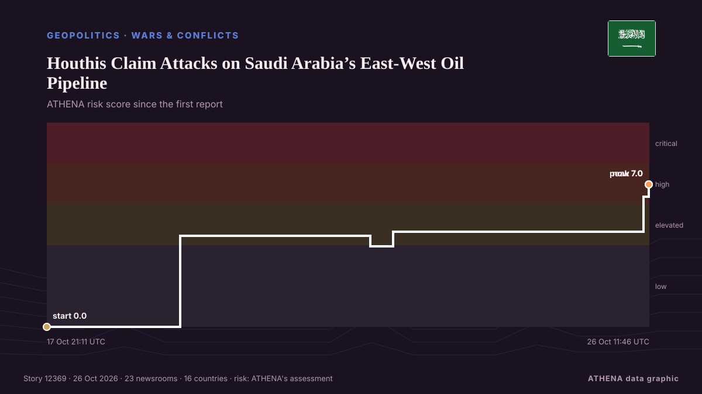

Schifffahrt
Schifffahrt und Meerengen heute
Letzte 24 Stunden — Ereignisse: 47, Länder: 47. Höchstes Risiko jetzt: 6.7 — Iran says discussing plan with mediators to end war, reopen Hormuz.

GeopolitikHouthis Claim Attacks on Saudi Arabia’s East-West Oil Pipeline
The Iran-backed Houthis on Monday claimed they attacked pumping stations along Saudi Arabia’s East-West onshore oil pipeline, the Kingdom’s key crude export route bypassing the Strait of Hormuz. von OilPrice.com
| 18. Okt. | 4 |
|---|---|
| 19. Okt. | 9 |
| 20. Okt. | 14 |
| 21. Okt. | 7 |
| 22. Okt. | 18 |
| 23. Okt. | 12 |
| 24. Okt. | 11 |
| 25. Okt. | 14 |
| 26. Okt. | 13 |
| 27. Okt. | 21 |
| 28. Okt. | 13 |
| 29. Okt. | 16 |
| 30. Okt. | 15 |
| 31. Okt. | 0 |
Maritimer Desk: Häfen, Routen und Vorfälle →
Tracker
Neueste
Inside Tehran talks: Iranians link Houthi de-escalation to US approval of regional truce
A day after Saudi Arabia and its two defence-pact partners sent senior officials to Tehran, sources say the clearest outcome is a promise to keep talking, not a deal to de-escalate on any front… von The National
Saudi Arabia flight update: India-bound services resume from Riyadh, Indian Embassy says
The King Khalid International Airport (KKIA) in Riyadh reopened on Sunday, March 17, but continues to see over 60% percent of cancellations in its original scheduled flights.Accord... von Oman Observer
Egypt approves military support for Saudi Arabia after Houthi attacks escalate
Saudi Arabia is a major political, financial partner of Cairo, providing billions of dollars in aid, energy supplies. von Express Tribune
Iran says discussing plan with mediators to end war, reopen Hormuz
A Qatari delegation visited Tehran on Sunday for talks to review developments including the latest on negotiations, Hormuz and energy supplies. von Free Malaysia Today
Romania blames Russia for drone that sinks cargo ship; 1 killed, 3 missing
Romania’s rescue operation recovered nine people and one deceased body from a distressed ship in the Black Sea, while three remain missing. von Arab News
Saudi says Riyadh airport partly reopens despite renewed Houthi threats
Saudi Arabia said its main airport had partially resumed operations at two terminals on Sunday despite renewed threats to target it from Yemen’s Iran-aligned Houthis, as the kingdom intercepted… von Cyprus Mail
Yemen: 75 new recruits killed in Houthi missile strike laid to rest
A mass funeral was held Wednesday for 75 new recruits killed earlier this week in a Houthi missile strike in southern Yemen that was the deadliest attack since the resurgence of fighting in the Yemen… von Africanews (English)
Houthis strike Yemen's Aden airport after evacuation warning
ADEN/DUBAI, Oct 28 - Yemen's Houthis attacked Aden airport on Wednesday, government officials said, after the Iran-aligned group warned people to evacuate the facility as fighting escalated in the… von The Straits Times
Zelenskyy: Tankers carrying Russian diesel to US will not be targeted
Reuters said Russia has resumed diesel shipments to its major buyers following Trump’s diesel deal, with one tanker departing for Turkey on Oct. von Kyiv Post
Yemen's Houthis say they attacked Saudi Ras Tanura refinery, no Saudi confirmation
Yemen's Houthis claimed attacks on three Saudi oil facilities and two international airports. von The Jerusalem Post
Turkey's new deal on Mediterranean maritime boundaries with Libya is exacerbating issues with Greece and the EU
Turkey and Libya plan to redraw maritime boundaries in the Mediterranean as part of a new economic corridor. von DW English
Greek container ship sinks after drone attack off Bulgaria
A Greek container ship has sunk after being hit by naval drones off Bulgaria on Wednesday, the Bulgarian government said, in the latest of a series of strikes on ships in the western Black Sea this… von Cyprus Mail